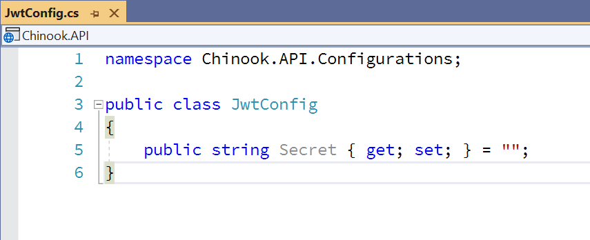

#
Identity in your Web API
#
START FROM PREVIOUS MODULE'S END
#
INSTALL NUGET PACKAGES TO API PROJECT
dos
dotnet add package Microsoft.AspNetCore.Authentication.JwtBearer
dotnet add package Microsoft.AspNetCore.Identity.EntityFrameworkCore
dotnet add package Microsoft.AspNetCore.Identity.UI
#
INSTALL NUGET PACKAGE TO DATA PROJECT
dos
dotnet add package Microsoft.AspNetCore.Identity.EntityFrameworkCore
#
RESTORE UPDATED CHINOOK DB OR ADD IDENTITY TABLES TO EXISTING DB
You can either restore a new database using a BAK file (if using MSSQL 2019) or run a SQL script if using older version of MSSQL.
#
RESTORING UPDATED CHINOOK DB WITH BAK FILE
Download the Chinook database BAK file for this part of the workshop in the GitHub repo. The file is a backup so we will restore it to where you have MSSQL 2019 installed.
#
RUN SQL SCRIPT TO ADD IDENTITY TABLES TO EXISTING CHINOOK DB
If you don't have MSSQL 2019 installed you can update your Chinook database by running this SQL script against your database to add the tables needed for Identity for this part of the workshop.
#
UPDATE OUR APPSETTINGS.JSON IN API PROJECT
Note: Will need to generate your new 32 character string.
"JwtConfig": {
"Secret" : "jkbflfzogupbyhypamekltpwkumodlfa"
},
** Note: https://www.random.org/string
#
CREATE NEW CLASS IN CONFIGURATION FOLDER IN API PROJECT
namespace ChinookASPNETWebAPI.API.Configurations
{
public class JwtConfig
{
public string Secret { get; set; }
}
}
#
ADD IDENTITY AND JWT CODE TO STARTUP IN API PROJECT
#
ServicesConfiguration.cs
public static void AddIdentity(this IServiceCollection services,
IConfiguration configuration)
{
services.Configure<JwtConfig>(configuration.GetSection("JwtConfig"));
services.AddAuthentication(options => {
options.DefaultAuthenticateScheme = JwtBearerDefaults.AuthenticationScheme;
options.DefaultScheme = JwtBearerDefaults.AuthenticationScheme;
options.DefaultChallengeScheme = JwtBearerDefaults.AuthenticationScheme;
})
.AddJwtBearer(jwt => {
var key = Encoding.ASCII.GetBytes(configuration["JwtConfig:Secret"]);
jwt.SaveToken = true;
jwt.TokenValidationParameters = new TokenValidationParameters{
ValidateIssuerSigningKey= true,
IssuerSigningKey = new SymmetricSecurityKey(key),
ValidateIssuer = false,
ValidateAudience = false,
RequireExpirationTime = false,
ValidateLifetime = true
};
});
services.AddDefaultIdentity<IdentityUser>(options => options.SignIn.RequireConfirmedAccount = true)
.AddEntityFrameworkStores<ChinookContext>();
}
#
ADD TO STARTUP CONFIGURE IN API PROJECT
app.UseAuthentication();Note: Add to very first line and has to be before app.UseAuthorization();
#
ADD NEW CLASSES FOR IDENTITY IN IDENTITY FOLDER IN DOMAIN PROJECT
#
AuthResult.cs
using System.Collections.Generic;
namespace ChinookASPNETWebAPI.Domain.Identity
{
public class AuthResult
{
public string Token {get;set;}
public bool Result { get; set; }
public List<string> Errors { get; set; }
}
}
#
RegisterModel.cs
using System.ComponentModel.DataAnnotations;
namespace ChinookASPNETWebAPI.Domain.Identity
{
public class RegisterModel
{
[Required]
public string Name { get; set; }
[Required]
public string Email { get; set; }
[Required]
public string Password { get; set; }
}
}
#
RegistrationResponse.cs
namespace ChinookASPNETWebAPI.Domain.Identity
{
public class RegistrationResponse : AuthResult
{
}
}
#
LoginModel.cs
using System.ComponentModel.DataAnnotations;
namespace ChinookASPNETWebAPI.Domain.Identity
{
public class LoginModel
{
[Required]
public string Email { get; set; }
[Required]
public string Password { get; set; }
}
}
#
UPDATE DBCONTEXT TO DESCEND FROM IDENTITYDBCONTEXT
#
ADD REGISTER ACTION AND LOGIN ACTION TO HOME CONTROLLER IN API POJECT
[Route("api/[controller]")]
[ApiController]
[EnableCors("CorsPolicy")]
public class HomeController : ControllerBase
{
private readonly ILogger<HomeController> _logger;
private readonly UserManager<IdentityUser> _userManager;
private readonly JwtConfig _jwtConfig;
public HomeController(ILogger<HomeController> logger, UserManager<IdentityUser> userManager,
IOptionsMonitor<JwtConfig> optionsMonitor)
{
_logger = logger;
_userManager = userManager;
_jwtConfig = optionsMonitor.CurrentValue;
}
[HttpGet]
public IActionResult Index()
{
return Ok();
}
[HttpPost, Route("Register")]
public async Task<ActionResult<RegistrationResponse>> Register([FromBody] RegisterModel user)
{
// Check if the incoming request is valid
if (ModelState.IsValid)
{
// check i the user with the same email exist
var existingUser = await _userManager.FindByEmailAsync(user.Email);
if (existingUser != null)
return BadRequest(new RegistrationResponse
{
Result = false,
Errors = new List<string>
{
"Email already exist"
}
});
var newUser = new IdentityUser { Email = user.Email, UserName = user.Email };
var isCreated = await _userManager.CreateAsync(newUser, user.Password);
if (isCreated.Succeeded)
{
var jwtToken = GenerateJwtToken(newUser);
return Ok(new RegistrationResponse
{
Result = true,
Token = jwtToken
});
}
return new JsonResult(new RegistrationResponse
{
Result = false,
Errors = isCreated.Errors.Select(x => x.Description).ToList()
}
) { StatusCode = 500 };
}
return BadRequest(new RegistrationResponse
{
Result = false,
Errors = new List<string>
{
"Invalid payload"
}
});
}
[HttpPost, Route("Login")]
public async Task<ActionResult<RegistrationResponse>> Login([FromBody] LoginModel user)
{
if (ModelState.IsValid)
{
// check if the user with the same email exist
var existingUser = await _userManager.FindByEmailAsync(user.Email);
if (existingUser == null)
{
// We dont want to give to much information on why the request has failed for security reasons
return BadRequest(new RegistrationResponse()
{
Result = false,
Errors = new List<string>()
{
"Invalid authentication request"
}
});
}
// Now we need to check if the user has inputed the right password
var isCorrect = await _userManager.CheckPasswordAsync(existingUser, user.Password);
if (isCorrect)
{
var jwtToken = GenerateJwtToken(existingUser);
return Ok(new RegistrationResponse()
{
Result = true,
Token = jwtToken
});
}
else
{
// We dont want to give to much information on why the request has failed for security reasons
return BadRequest(new RegistrationResponse()
{
Result = false,
Errors = new List<string>()
{
"Invalid authentication request"
}
});
}
}
return BadRequest(new RegistrationResponse()
{
Result = false,
Errors = new List<string>()
{
"Invalid payload"
}
});
}
private string GenerateJwtToken(IdentityUser user)
{
// Now its ime to define the jwt token which will be responsible of creating our tokens
var jwtTokenHandler = new JwtSecurityTokenHandler();
// We get our secret from the appsettings
var key = Encoding.ASCII.GetBytes(_jwtConfig.Secret);
// we define our token descriptor
// We need to utilise claims which are properties in our token which gives information about the token
// which belong to the specific user who it belongs to
// so it could contain their id, name, email the good part is that these information
// are generated by our server and identity framework which is valid and trusted
var tokenDescriptor = new SecurityTokenDescriptor
{
Subject = new ClaimsIdentity(new[]
{
new Claim("Id", user.Id),
new Claim(JwtRegisteredClaimNames.Sub, user.Email),
new Claim(JwtRegisteredClaimNames.Email, user.Email),
// the JTI is used for our refresh token which we will be convering in the next video
new Claim(JwtRegisteredClaimNames.Jti, Guid.NewGuid().ToString())
}),
// the life span of the token needs to be shorter and utilise refresh token to keep the user signedin
// but since this is a demo app we can extend it to fit our current need
Expires = DateTime.UtcNow.AddHours(6),
// here we are adding the encryption alogorithim information which will be used to decrypt our token
SigningCredentials = new SigningCredentials(new SymmetricSecurityKey(key),
SecurityAlgorithms.HmacSha512Signature)
};
var token = jwtTokenHandler.CreateToken(tokenDescriptor);
var jwtToken = jwtTokenHandler.WriteToken(token);
return jwtToken;
}
}
#
CALL IDENTITYDBCONTEXT ONMODELCREATING
#
AUTHORIZE THE ALBUM CONTROLLER FOR IDENTITY IN API POJECT
#
TEST IN POSTMAN
#
Payload for Register Endpoint
{
"name": "Chris Woodruff",
"email": "cwoodruff@live.com",
"password": "p@ssw0rd"
}